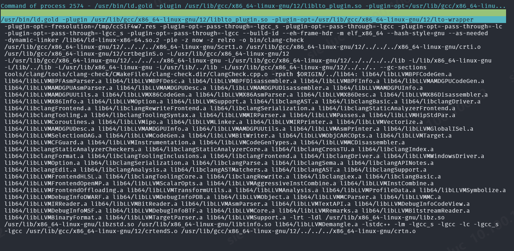
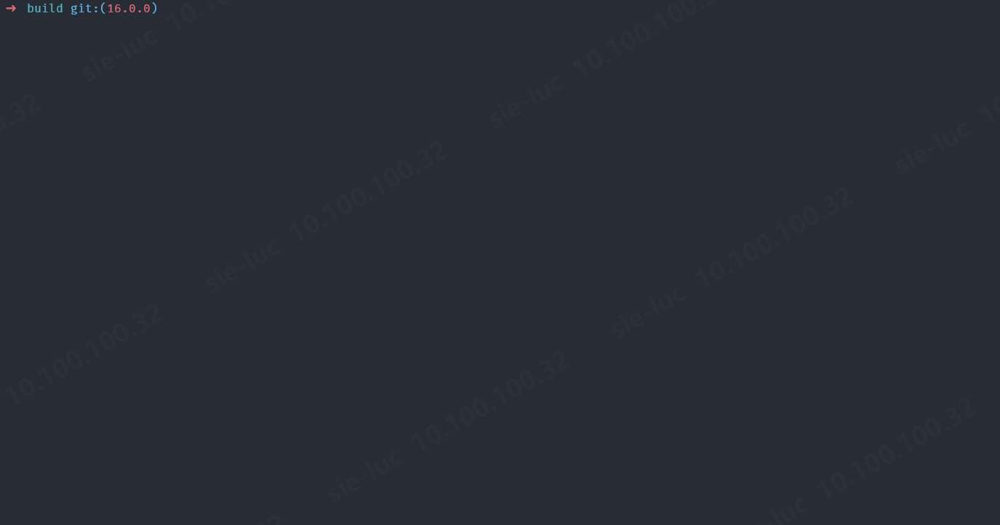
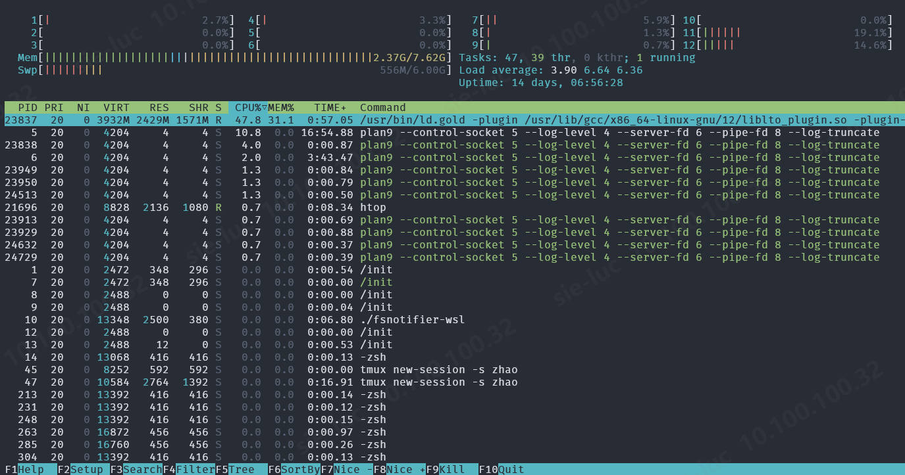

LLVM
LLVM & llvm-project
LLVM 是 Low-Level Virtual Machine 的简写，但事实上它与虚拟机关系不大。我们更熟悉它是一套工具链，包括 clang /'klæŋ/, lld, lldb 等等。接触 LLVM 是因为 Mesa llvmpipe 使用 LLVM, 还有 AMDGPU 和 Radeon 的编译器后端都使用 LLVM IR，所以要编译 Mesa 的 -Dgallium-drivers=llvmpipe,radeonsi 都依赖于 LLVM 的诸多组件, 构建 Linux 内核的 eBPF 程序也依赖 LLVM, 构建 perfetto 也依赖 LLVM。这里主要记录 LLVM 的构建和使用的一些问题。
llvm-project 是 2003 年开源的。2022 年初，llvm-project 的源码库和 bug tracker 被移到了 GitHub. 一开始，LLVM 的社区交流和项目沟通主要方式是 Mailing Lists 和 IRC, 在 2019 年，LLVM 社区转向 Discourse 这个开源社区交流平台。
Build LLVM
cmake -S llvm -B build- llvm 是 llvm-project 根目录下的一个子目录，是我们的编译对象，像 lld, 还有 c++ 运行时库这里不需要构建
-G "Ninja"- 使用 ninja 构建系统
-DCMAKE_BUILD_TYPE=Debug- 默认是
-DCMAKE_BUILD_TYPE=Release
- 默认是
-DCMAKE_EXPORT_COMPILE_COMMANDS=ON- 生成 compile_commands.json 索引数据库(导入 IDE)
-DCMAKE_INSTALL_PREFIX=~/.local/llvm- 自定义安装路径，默认是 /usr/local
- 安装路径在安装之后也可以通过
llvm-config --prefix --ldflags查到
-DBUILD_SHARED_LIBS=ONBUILD_SHARED_LIBS是一个 CMake 选项，当它开启时，那些没有指明 STATIC, SHARED, MODULE 的构建目标都会被构建成 SHARED 库。这个一般要开启，否则会导致在链接器进程因 OOM 被 Killed (因为可执行程序由静态库们组装而成, 内存不够用)
-DLLVM_LIBDIR_SUFFIX=64- 如果是 64 位系统，安装路径会由原来
${CMAKE_INSTALL_PREFIX}/lib变成${CMAKE_INSTALL_PREFIX}/lib64
- 如果是 64 位系统，安装路径会由原来
-DLLVM_BUILD_LLVM_DYLIB=OFF- 如果 ON，将所有 LLVM 组件生成一个单一的共享库 libLLVM, 适用于将 LLVM 嵌入到其它工具中的情况
-DLLVM_ENABLE_PROJECTS="clang;lld"- 只构建 clang 和 lld (LLVM Linker) 子项目
-DLLVM_ENABLE_RUNTIMES="libcxx;libcxxabi"- 升级
libc++.so.1, 比如要将 clang++ 支持的 c++ 标准库升级到 c++2x (clang-16 以上支持 c++20)
- 升级
-DLLVM_TARGETS_TO_BUILD="BPF;AMDGPU;host"- 指定支持哪些后端(ISA), 这里如果是为了编译 Mesa Radeon/AMDGPU,
AMDGPUtarget 必须指定。host是指当前编译机器。另外指定的越多，编译越耗时 - 安装后可通过
llvm-config --targets-built获取
- 指定支持哪些后端(ISA), 这里如果是为了编译 Mesa Radeon/AMDGPU,
-DLLVM_PARALLEL_COMPILE_JOBS=1 -DLLVM_PARALLEL_LINK_JOBS=1- 在编译机配置不高的时候，减小
cc1plus和ld被 OOM-Killed 的风险 - 当配置
-DCMAKE_BUILD_TYPE=Debug时，即使将上面两个选项都配置为 1，仍然很大可能会被 OOM-Killed (问题不是 CPU 线程多少，而是内存需求过大)。这时最极解决方法是增大 swap 分区:sudo fallocate -l 4G /swapfile- 比
dd if=/dev/zero of=/swapfile bs=1 count=0 seek=4G快一点 - 当
-DBUILD_SHARED_LIBS=OFF(构建 LLVM 为静态库) 时，最好 10G
- 比
sudo chmod 600 /swapfilesudo mkswap /swapfile- 格式化成 swap 分区
sudo swapon /swapfile- 激活 swap 分区
- 增大 swap 分区后的效果

- 在编译机配置不高的时候，减小
-DLLVM_USE_LINKER=gold- 将默认链接器
bfd换成gold(可能会链接得快一点) - 一般 Linux 系统上默认安装有两个链接器
- /usr/bin/ld -> x86_64-linux-gnu-ld
- /usr/bin/ld.bfd -> x86_64-linux-gnu-ld.bfd
- /usr/bin/ld.gold -> x86_64-linux-gnu-ld.gold
-DLLVM_USE_LINKER=gold
- 将默认链接器
安装后，我们需要将 bin 目录加入 PATH, 并创建 /etc/ld.so.conf.d/llvm.conf 包含下面一行
1 | /home/luc/.local/llvm/lib64 |
Building llvmpipe
1 | llvm-config found: YES (/home/luc/.local/llvm/bin/llvm-config) 15.0.0 |
当编译 Mesa 时，遇到的第一个编译错误是 No such file or directory
1 | ../src/gallium/auxiliary/gallivm/lp_bld_init.c:52:10: fatal error: llvm-c/Transforms/Coroutines.h: No such file or directory 52 | #include <llvm-c/Transforms/Coroutines.h> | ^~~~~~~~~~~~~~~~~~~~~~~~~~~~~~~~ compilation terminated. |
这个问题似乎不好解决，我转向构建 LLVM 14.0.6
1 | ➜ llvm-project git:(14.0.6) cmake -S llvm -B build -G Ninja -DCMAKE_BUILD_TYPE=Debug -DCMAKE_EXPORT_COMPILE_COMMANDS=On -DLLVM_ENABLE_PROJECTS="clang;lld" -DLLVM_ENABLE_RUNTIMES="libcxx;libcxxabi" -DCMAKE_INSTALL_PREFIX=~/.local/llvm-14 -DLLVM_LIBDIR_SUFFIX="64" -DLLVM_TARGETS_TO_BUILD="host" -DLLVM_BUILD_LLVM_DYLIB=On -DBUILD_SHARED_LIBS=On -DLLVM_PARALLEL_COMPILE_JOBS=1 -DLLVM_PARALLEL_LINK_JOBS=1 -DLLVM_USE_LINKER=gold |
但又遇到下面的错误
1 | CMake Error at /home/luc/gh/llvm-project/libcxx/CMakeLists.txt:880 (message): LIBCXX_ABI_NAMESPACE '__1' is reserved for use by libc++. -- Configuring incomplete, errors occurred! |
查看 libcxx/CMakeLists.txt 发现 LIBCXX_ABI_NAMESPACE 是一个 CMake 变量, 而且被缓存了，难怪第一次构建时没有报这个错误，所以在编译新的 LLVM 之前一次记得将原来的构建目录删除。
1 | set(LIBCXX_ABI_NAMESPACE "" CACHE STRING "The inline ABI namespace used by libc++. It defaults to __n where `n` is the current ABI version.") |